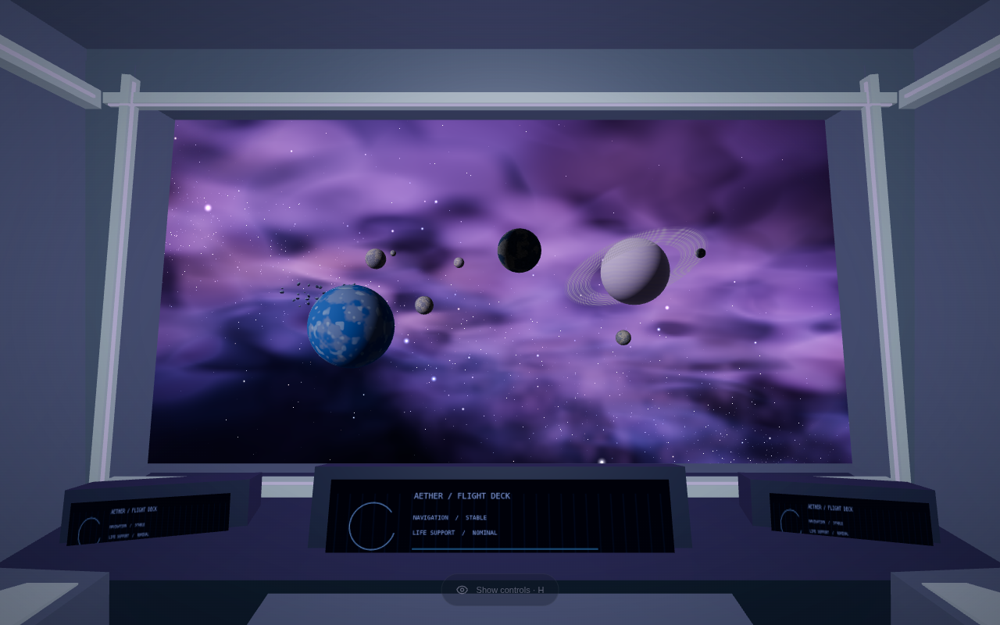
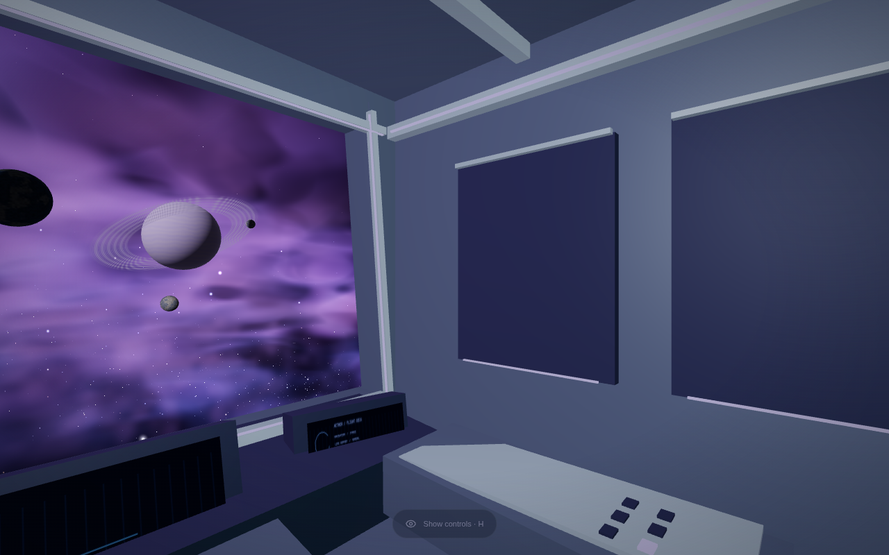
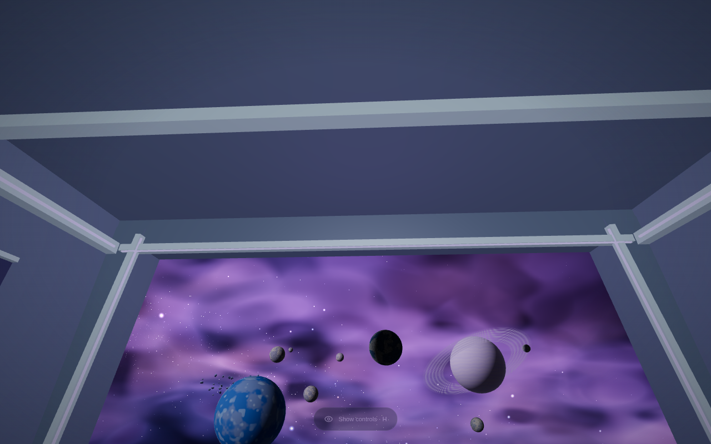
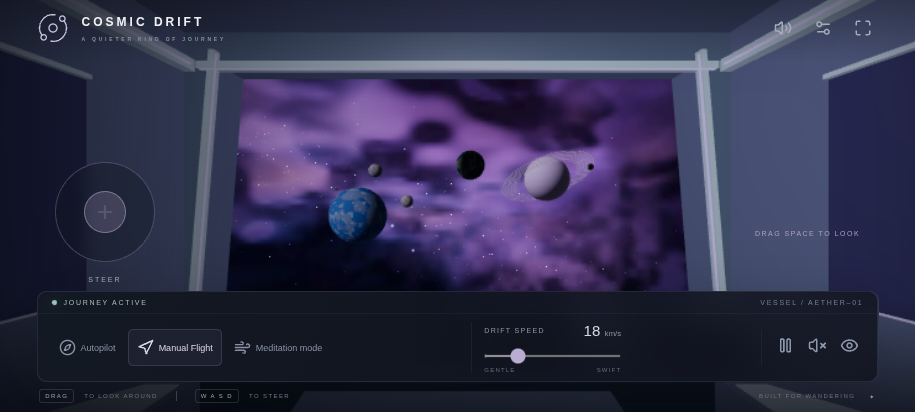

نمای قبلی و کابین بستهٔ جدید


پوستهٔ بسته، داشبورد و کنسولهای جانبی، اجرام متنوع و بودجهٔ سبکتر رندر. تصاویر دسکتاپ با Medium و Adaptive resolution خاموش ثبت شدهاند. تصویر موبایل شبیهسازی ورودی لمسی است؛ Android واقعی آزمایش نشده است.




Chromium/SwiftShader، اندازهٔ ۹۶۰×۵۴۰، پنج ثانیه نمونهگیری پس از warm-up؛ بدون تست GPU همزمان. presets جدید سبکترند و Adaptive resolution فعال است. این اعداد FPS سختافزار واقعی یا پایداری ۶۰ FPS را تضمین نمیکنند.
| کیفیت | زمان میانی فریم قبل → بعد (ms) | draw call قبل → بعد |
|---|---|---|
| Low | 83.3 → 50.0 | 29 → 19 |
| Medium | 233.3 → 100.0 | 44 → 23 |
برای سیستم ضعیف ابتدا Performance mode را روشن کنید. در کیفیت Low/Medium هالهٔ سبک ستاره حفظ شده و Bloom پسپردازشی خاموش است.